Figures
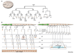
HypFIG 1 - Embryonic and post-
embryonic lineages
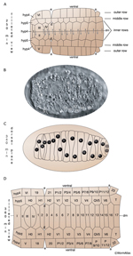
HypFIG 2 - Dorsal intercalation of
the hypodermis
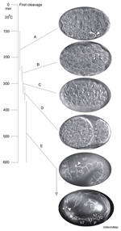
HypFIG 3 - Embryonic hypodermal
morphogenesis
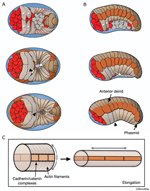
HypFIG 4 - Ventral enclosure and
elongation of the hypodermis
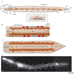
HypFIG 5 - Hypodermis in the
early L1 stage
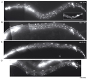
HypFIG 6 - Division of seam blast
cells in L1
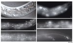
HypFIG 7 - Larval divisions of
seam cells
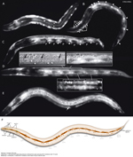
HypFIG 8A-F - Hypodermal
development during larval
stages
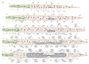
HypFIG 8G - Graphic of
postembryonic development
of the left lateral hypodermis
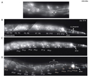
HypFIG 9 - Division of P cells
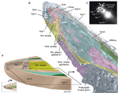
HypFIG 10 - Anterior hypodermis
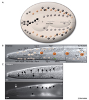
HypFIG 11A-C - Hypodermis of
the head
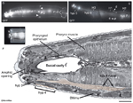
HypFIG 11D-F - Hypodermis of
the head
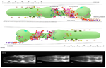
HypFIG 11G - Epithelial nuclei in
the head
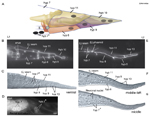
HypFIG 12 - Tail hypodermis
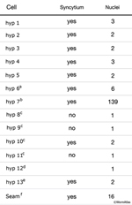
HypTABLE 1 - Most hypodermal
cells are syncytial
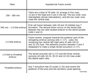
HypTABLE 2 - Timing of
hypodermal fusion events in the
embryo

HypFIG Cell List - Hypodermal
nuclei in newly hatched L1